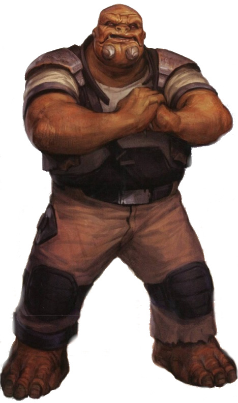

Dowutin
dowutin
Special Abilities: Dowutins begin the game with one rank in Resilience. They still may not train Resilience above rank 2 during character creation.
Large: Dowutins have a silhouette of 1 or 2, chosen at character creation.
Immovable: Dowutins who suffer the immobilized condition, are knocked prone, or are otherwise moved against their will may, as an out-of-turn incidental, suffer 3 strain to avoid the effect. Dowutins who are silhouette 2 suffer only 1 strain to use this ability.
The Dowutins are a long-lived species of muscle-bound humanoids. So extensive are their life spans, in fact, it is said that no Dowutin has ever died of old age, instead falling in battle or succumbing to the many perils of Dowut. Whether this is true or a myth perpetuated by Dowutin boasting is difficult to say. It is certain, however, that Dowutins are among the strongest and toughest sentients in the galaxy. For these reasons, they are highly sought as soldiers, mercenaries, and bodyguards. However, Dowutin arrogance is often just as immense, and few condescend to serve what they perceive as weaker beings.
Alongside their incredible longevity, Dowutins possess a complementary trait even rarer among sentients: they never stop growing. By the time Dowutins are old enough to fend for themselves, they rival the most robust specimens of many species. During their second decade, typical Dowutins can rival most Wookiees in stature and fortitude. A Dowutin in its fifth century is a tower of muscle and horn weighing as much as a metric ton.
Dowutins prize physical strength and vigor, but in a very different way than most sentient species. For a Dowutin, strength and even combat training are not matters of pride, but matters of pragmatism; on Dowut, those with strength and skill get the resources and respect they are due. Many Dowutins who leave their homeworld are surprised and confused by the criteria the rest of the galaxy uses to assign authority, political power, and leadership positions. More than one Dowutin has had difficulty adapting and found themselves in deep trouble for it.
Most Dowutins are solitary by choice, although this does not stop a Dowutin from joining forces with others when expedient. Rare, however, are Dowutins who stoop to taking orders from beings smaller or weaker than themselves. Many sentients who find themselves working with Dowutins learn to frame directives as suggestions or even questions, even when they are technically or practically in a position to issue orders or guidance. In some cases, others find it necessary to leave Dowutins under the impression they are in charge, if for no other reason than to keep operations running smoothly.
Dowutins have a reputation for being unfriendly, even irritable. Although deserved, this too stems from the species’ unusual perspective. Dowutins are as direct in their speech as in any other undertaking, and most have no qualms against speaking the truth as they see it, no matter how harsh it might be. A typical Dowutin simply does not see the point in mincing words. Obfuscation and deception, even to avoid giving offense, complicate matters and cause problems. Many who interact with Dowutins also assume the species incapable of humor. Although this is not strictly true, Dowutins rarely suffer fools. The sorts of misunderstandings, mishaps, ironies, and even quips that others might find amusing, a typical Dowutin sees only as annoying.
Dowutins are large and muscular, with tough, leathery hides ranging from yellow to deep brown. Although humanoid in form, Dowutins have as much in common with banthas and dewbacks as with any human or near-human species. Vestigial tusks, although ineffective as weapons, are a reminder of the Dowutins’ ancestors, omnivorous herd beasts that roamed the frigid plains of Dowut. These tusks helped the creatures to forage for roots, insects, and hibernating feeks. Dowutins are more sophisticated in their diets, and many put their great strength and stamina to use as hunters, rather than as foragers.
Dowutins’ fingers end in thick, tough spikes—the word “claw” hardly does them justice—made of the same bony material as their tusks. Although problematic for delicate manual tasks, these talons provide an effective means of self-defense and even augment the Dowutins’ considerable strength, whether for prying apart bulkhead doors or dismantling a troublesome droid bare-handed.
In support of their immense frames and continuing development, Dowutins have exceptional appetites, consuming as much as half their body weight in a day. For Dowutins abroad in the galaxy, obtaining adequate food can pose a challenge—for themselves and for cantinas, tapcafs, and other nearby food vendors.
The omnivorous ancestors of the Dowutins lived in migratory herds, traversing the frozen plains of Dowut in search of the considerable sustenance required for such large beasts. Despite their origins, Dowutins have evolved as primarily solitary beings. They have little use for family bonds, and are left to fend for themselves on their own at a young age. Juveniles must learn to survive and hunt in the harsh climate of Dowut or perish.
Similarly, Dowutins have little use for organized municipalities. Their simple cities exist for convenience alone. Outsiders often view Dowutin civilization as barbaric and primitive, but the Dowutins’ pragmatism, straightforward approach, and uncompromising self-reliance have allowed them to thrive with few of the institutions most worlds rely on.
For Dowutins, might makes right. The Dowutin legal system, such as it is, resolves disputes primarily through contests of strength—that is, in those relatively rare cases when the concerned parties do not simply settle matters themselves immediately with a good fist fight. However, while usually quick to ire, Dowutins seldom hold grudges. For the average Dowutin, the concept of revenge serves no purpose. Neither do Dowutins bother with avenging wrongs against members of their extended clan: they believe that wronged parties should be strong enough to take care of themselves.
Dowut’s relative anarchy has left its population vulnerable in the era of the Galactic Empire. Due to their physiques and hardiness, Dowutins stand out to many Imperial officials as desirable slaves. The Dowutins’ fierce spirits and arrogance, and the very physical qualities for which they are prized, have ensured few successful enslavements. However, their resistance at both individual and cultural levels has resulted in one of the most intensive and oppressive Imperial crackdowns in the galaxy. Traditionally largely independent, Dowut now suffers from an indefinite Imperial blockade. For the most part, the notoriously self-reliant Dowutins are little affected by this arrangement as long as they avoid any personal entanglements with Imperials.
The planet of Dowut lies in the Core, not far from the Unknown Regions. Orbiting at a considerable distance from its ternary star system, Dowut is a frigid, harsh world. Dowutins must be strong and resilient to survive on their planet’s windswept tundra. Competition for resources and game is fierce, and Dowutins must be wary of the same ravenous predators that threatened the herds of their ancestors. The vegetation on Dowut is as hardy and practical as the inhabitants. Thorny vines climb up icy cliff faces, and tough scrub claws into the frozen soil. Herds of large beasts not unlike the Dowutins’ ancestors traverse the tundra, as gor-cats and packs of nabirs pick off the weakest specimens and those that fall behind.
The Dowutins have generally avoided politics as much as possible. Although Dowut joined the Republic several centuries ago, a Dowutin Senator made an appearance on Coruscant only a handful of times. Even at the height of the Clone Wars, the Dowut seat was vacant the majority of the time.
The Dowuta language consists largely of deep, booming vocalizations with thundering reverberations. It is difficult, if not impossible, for most other species to emulate the sounds required to speak Dowuta, and attempts are among the few things to draw forth a typical Dowutin’s sense of humor.
Most Dowutins speak only their native tongue, seeing little need to learn Basic—if a weaker being comes to Dowut to communicate, it is the offworlder’s responsibility to find a method of communication. However, Dowutins who travel abroad by choice almost invariably learn Basic. Even a Dowutin with years of experience speaks Basic with a thunderous bass. Most Dowutins find whispering impossible, and the roar of an angry or excited Dowutin poses a serious threat to the ears of those close by.
Raised to depend only on their own strength and resourcefulness, few Dowutins find appealing the concept of an energy field that binds together all living things. Consequently, only a handful of Dowutins were members of the Jedi Order throughout its history. However, there is no evidence that Dowutins are less sensitive to the Force as a species than any other. It is more likely that the majority of Force-sensitive Dowutins simply fail—or refuse— to recognize their ability.
Though few Dowutins ever trained as Jedi, those who did witness the Jedi in battle often developed a great respect for the Jedi’s strength. In fact, such encounters preceded the recruitment of the majority of Dowutin Jedi, since only a Dowutin fully convinced of the power and skill of a smaller being would deign to release its offspring into Jedi custody. Dowutins inducted into the order would continue their Padawan training far past the time their kin on Dowut had set out on their own.
Despite the scarcity of Dowutins in the Jedi’s history, the species’ great strength ensured their success as Warriors, even if some had difficulty with the subtler aspects of lightsaber combat. Any Dowutins seeking to follow the path of the Jedi must take pains, however, to unlearn many of their traditional ways. The Dowutin propensity for violence and arrogance can be a great asset in battle, but taken too far can lead to the dark side of the Force. Even greater susceptibility lies in the traditional Dowutin view of power and authority. A being with such beliefs who taps into the power of the Force is certain to find tempting the limitless strength it can offer. Taken to their extreme, such views bear a troubling resemblance to those of the Sith.
Although their expansion slows somewhat in their later life, Dowutins never stop growing. The largest recorded Dowutin stood almost four meters tall and weighed over two metric tons. It is entirely possible that even larger Dowutins have existed on their homeworld, unseen by the wider galaxy. The Dowutins themselves do not seem to have an interest in maintaining records of such facts. Strong Dowutins prosper in their time, and their size is irrelevant to future generations.
Elder Dowutins are immensely strong and tough. Some beings claim that the hide of a mature Dowutin compares favorably to laminate armor when it comes to defensive capability.
For reasons that are not entirely clear, Dowutins almost invariably return to Dowut in their later years. In part, this may be a simple matter of practicality: most space stations, ships, and even cities simply are not designed for occupants of such immensity. However, some outsiders theorize that an instinctive, unspoken desire for their homeworld grips Dowutins more strongly as they age.